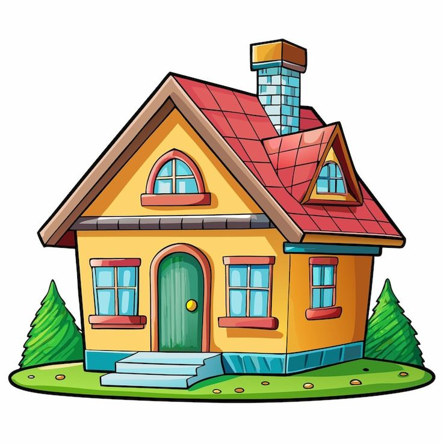
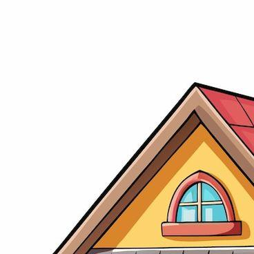
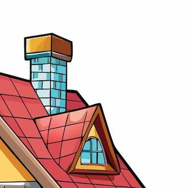
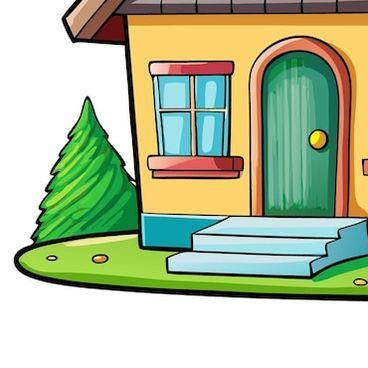
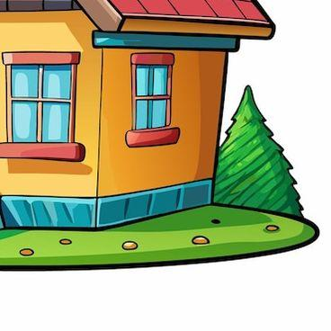

Задание 5. Перетаскивание объектов
Описание задания
Целью данного задания является создание механизма перетаскивания объектов на веб-странице.
Задача состоит в сборке целостного дома из нескольких элементов:
- Количество собираемых элементов: не менее 4.
- Каждый элемент должен быть повёрнут.
- Реализовать возможность поворота элементов.
- При правильной сборке рисунка пользователь должен увидеть анимацию.
Готовая картинка может располагаться в любом месте контента.
Вариант 1. Собрать дом.

Реализация
Ниже представлен процесс реализации задания
Для взаимодействия с элементами используйте мышь.
Перетащите элементы в рамку, поверните их и соберите дом.



